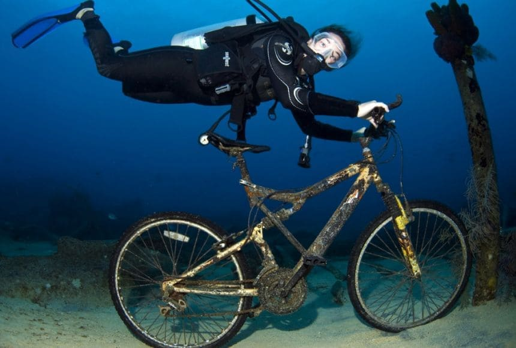
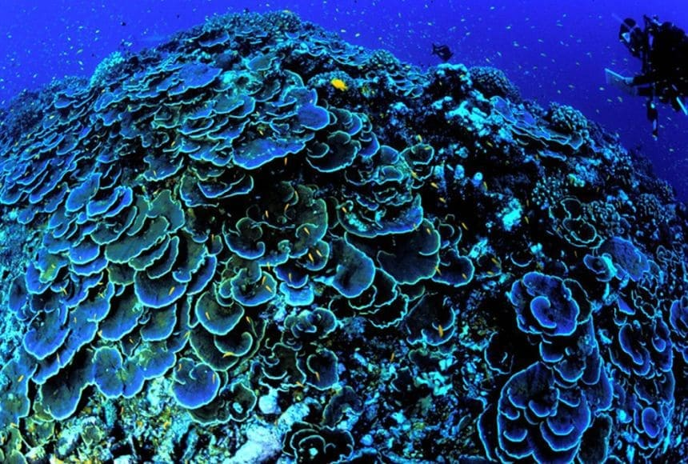
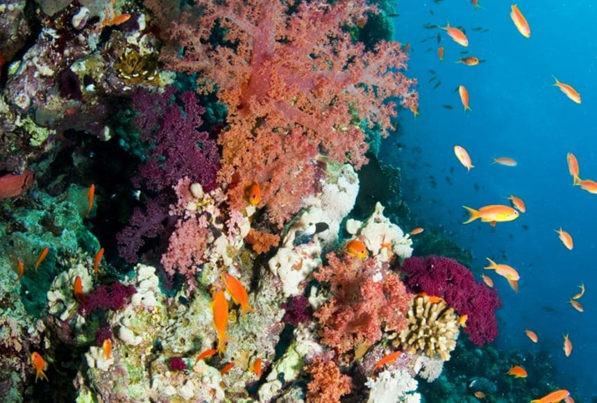

Nuestro trabajo en la actualidad

Un buceador encuentra una bicicleta
Buzos encontraron esta bicicleta en el océano cerca de Gran Caimán, Islas Caimán...
Leer más

Los estudiantes leen sobre el establecimiento del Monumento Nacional Marino de la Fosa...
Leer más
